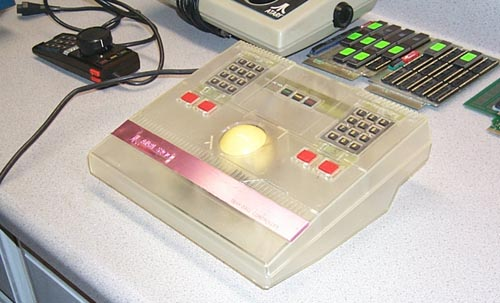
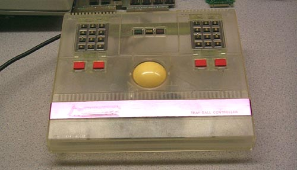

This is a clear plastic cased Atari 5200 trakball. The electronics and design is identical to the standard production Atari 5200 trakball. According to Brad Saville and Regan Cheng, sometimes a mold would be pressed using available plastics to do "test runs" of the molds to look for imperfections or problems with the molds, also the clear color would provide a way of having a see-through method of examining the case design to see if any changes needed to be made. Besides, it looks really cool too! :-)
